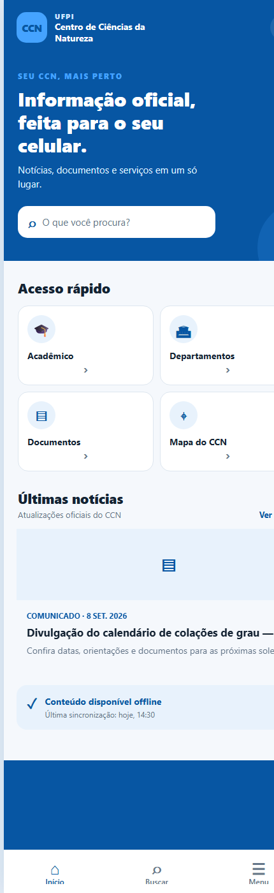
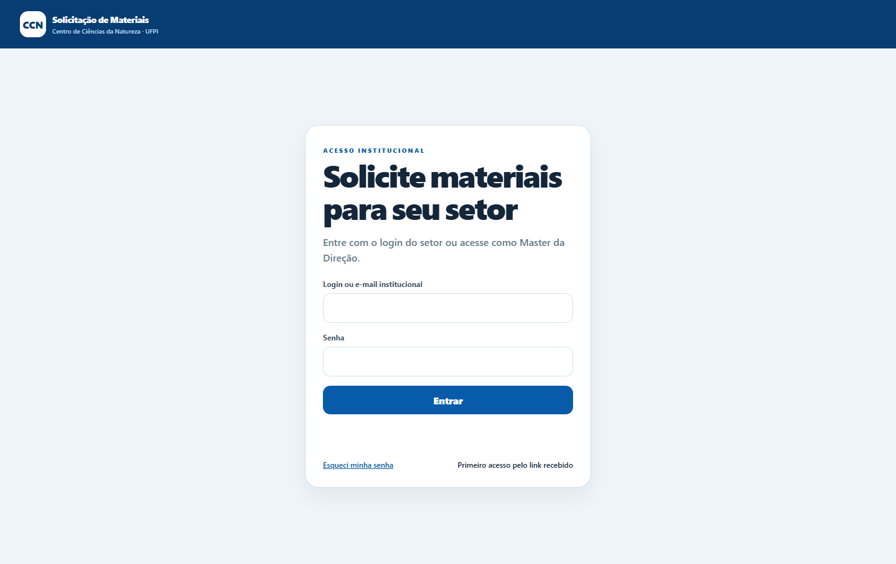
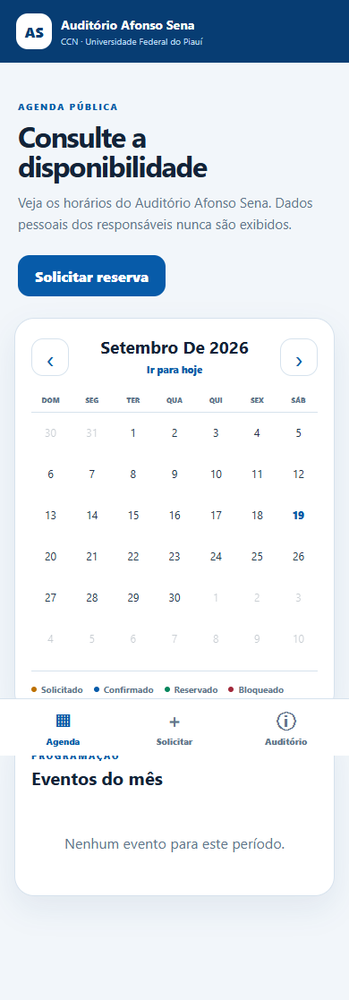

Um ecossistema digital
para a Universidade.
Aplicativos, portais e sistemas pensados para tornar serviços acadêmicos mais simples, conectados e acessíveis.
Tecnologia que aproxima
a instituição das pessoas.
Esta coleção reúne conceitos independentes para o Centro de Ciências da Natureza. Cada projeto possui objetivo, interface e código próprios, mas compartilha uma arquitetura de experiência consistente.
Explore cada solução

CCN Mobile
Informações, notícias, documentos e serviços do Centro em uma experiência mobile-first.
Ver projeto ↗
Solicitação de Materiais
Fluxo digital de pedidos, validação, documentos e acompanhamento por setor.
Ver projeto ↗
Auditório Afonso Sena
Disponibilidade, solicitação e gestão de reservas em uma jornada clara.
Ver projeto ↗e transformação.PORTAL DIGITAL
CCN Web
Conteúdo institucional, notícias e serviços organizados para qualquer tela.
Ver projeto ↗Projetos separados para manutenção e evolução independentes. Uma assinatura única para apresentar o conjunto com clareza.